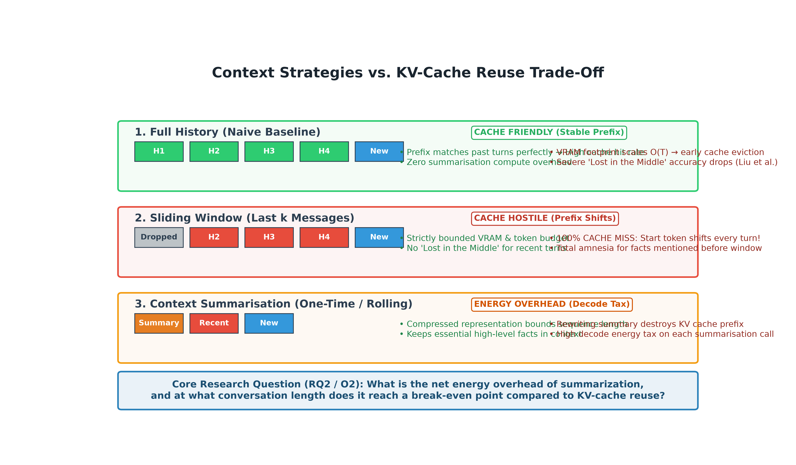
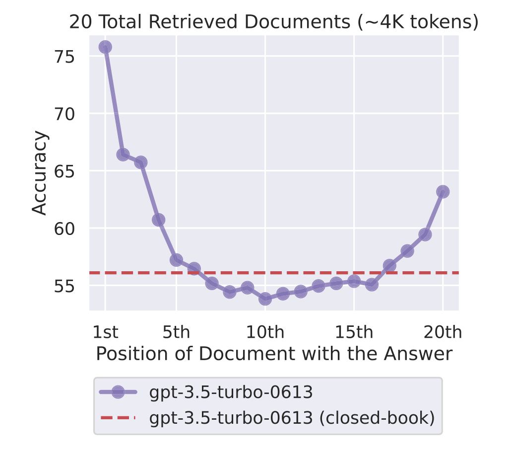

Problem Statement & Motivation
LLMs are stateless: in multi-turn dialogues, the full conversational history is re-sent with every new user query. The serving engine must process ("prefill") all prior tokens repeatedly before generating a response.
Prefix Cache: ≈ S + u + (T−1)·m → O(T) Linear Workload
Without reuse, prefill compute grows quadratically. Automatic prefix caching (KV-cache reuse) mitigates this explosion by skipping redundant prefill for identical token sequences.

Theoretical Background
Prefill vs. Decode (Fernandez et al., ACL 2025):
- Prefill: Highly parallel, compute-bound matrix multiplications. Prefix caching strictly eliminates this phase for repeated prefixes.
- Decode: Generates tokens sequentially; memory-bandwidth-bound. At each step, weights and the entire KV cache must be streamed from VRAM.
- Key Insight: Decode dominates total GPU energy. Caching saves tokens, but energy savings are strictly bounded by decode demands.
Size =
2 × layers × kv_heads × head_dim × bytesFor Llama-3-8B (FP16): ≈ 128 KiB/token → 1 GB VRAM per 8k context!
PagedAttention (Kwon et al., SOSP 2023): Stores KV states in non-contiguous 16-token physical blocks, cutting fragmentation from 60–80% to <4%. Prefix blocks are hashed and shared copy-on-write across requests.
The Core Tension: Context vs. Cache
To avoid VRAM exhaustion, developers employ context-reduction strategies. However, truncation and prefix caching pull in opposite directions:

| Strategy | Prefix Stable? | VRAM Impact | Energy Penalty |
|---|---|---|---|
| Full History | ✓ Yes (Append-only) | Scales O(T) | Decode attention reads |
| Sliding Window | ✗ No (Shifts start) | Strictly Bounded | 100% Cache Miss! |
| Summarisation | ✗ No (New prefix) | Bounded | High decode energy tax |
Quality: "Lost in the Middle"
Retaining full history is not a quality upper bound. Liu et al. (TACL 2024) prove that LLM accuracy follows a U-shaped serial-position curve:
- Primacy & Recency Bias: High accuracy when facts are at the start (>70%) or end (~64%).
- Middle Degradation: Accuracy drops to ~54%—worse than answering closed-book with zero context (56.1%)!

Research Questions & Hypotheses
Hypothesis: Cache off yields quadratic cumulative energy. Cache on flattens prefill, but decode costs make relative energy savings < token savings.
What is the net energy overhead of context summarization, and at what conversation length does it reach a break-even point compared to KV-cache reuse?
Hypothesis: For T < T*, summarisation consumes more net energy due to autoregressive decode overhead. Only at long horizons does reduced prefill compensate for this tax.
Hypothesis: Output-token estimators fail to model cache discounts, reporting biased footprints.
Experimental Methodology (Phase 2)
Controlled replay of scripted multi-turn conversations through isolated Docker containers serving vLLM on our dedicated GPU hardware.

Ablation Matrix:
- Cont. 0 (Baseline): Prefix caching OFF (naive full recomputation).
- Cont. A (Cache Only): Prefix caching ON, full history.
- Cont. B (Window Only): Sliding window (last 5 msgs), caching OFF.
- Cont. C (Summary Only): Rolling summary, caching OFF.
- Cont. D (Mega-Optimized): Caching ON + cache-aware chunked window.
Hardware, Metrics & Threats to Validity
- Server Hardware: 2 × NVIDIA RTX 4080 (16 GB VRAM each). Single GPU per run (Fernandez: tensor parallelism increases energy by 29–55%). Small open-weight LM (3–4B BF16).
- Energy Protocol: CodeCarbon + direct NVML hardware counters. 5 repetitions, randomised order, idle baseline subtracted.
- Quality Metric: Exact match recall of facts planted systematically at Early (T1–3), Middle (T10–15), and Recent (last 2–3) turns.
- Composite Metric:
Joules per Correct Answer(O4). - Threats to Validity: NVML sampling granularity on short turns; single-user batching vs. multi-user memory eviction contention.
Project Timeline & Core References
| Milestone | Target Date | Deliverable |
|---|---|---|
| Phase 1 Defence | Nov 20, 2026 | Poster & Oral Exam |
| Harness & Spikes | Early Dec 2026 | vLLM & NVML scripts |
| E1 & E2 Runs | Dec–Early Jan | Ablation measurements |
| Final Report | Late Jan 2027 | 8–10 Page Paper |
[1] Fernandez et al., ACL 2025. Energy of LLM Inference & Optimizations.
[2] Liu et al., TACL 2024. Lost in the Middle: How LMs Use Long Contexts.
[3] Kwon et al., SOSP 2023. Efficient Memory Serving with PagedAttention.
[4] Zine et al., arXiv:2607.09172. Evaluating Energy Across vLLM Configs.